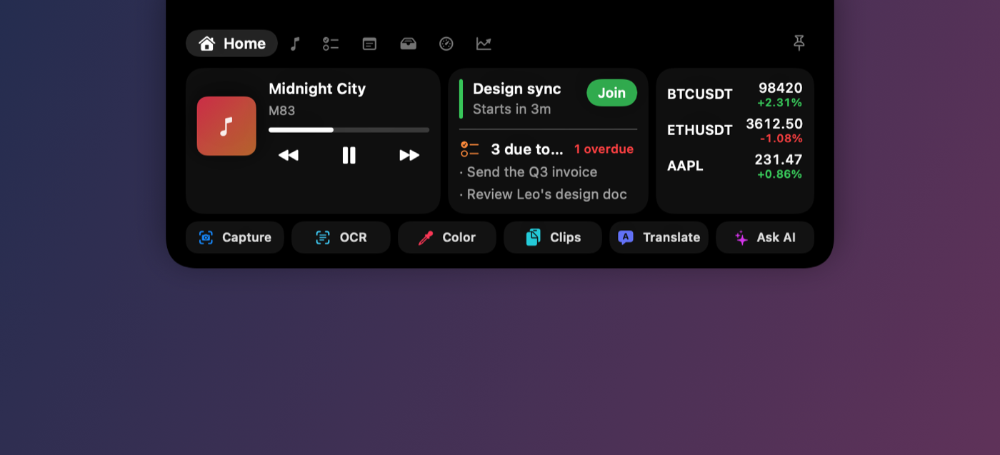
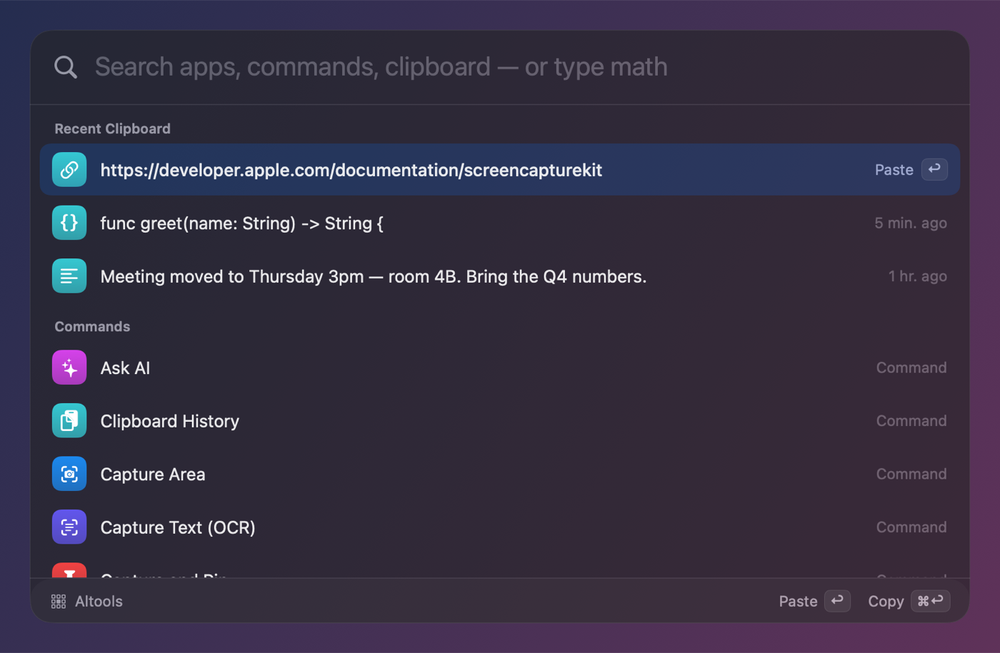
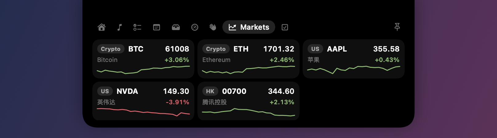
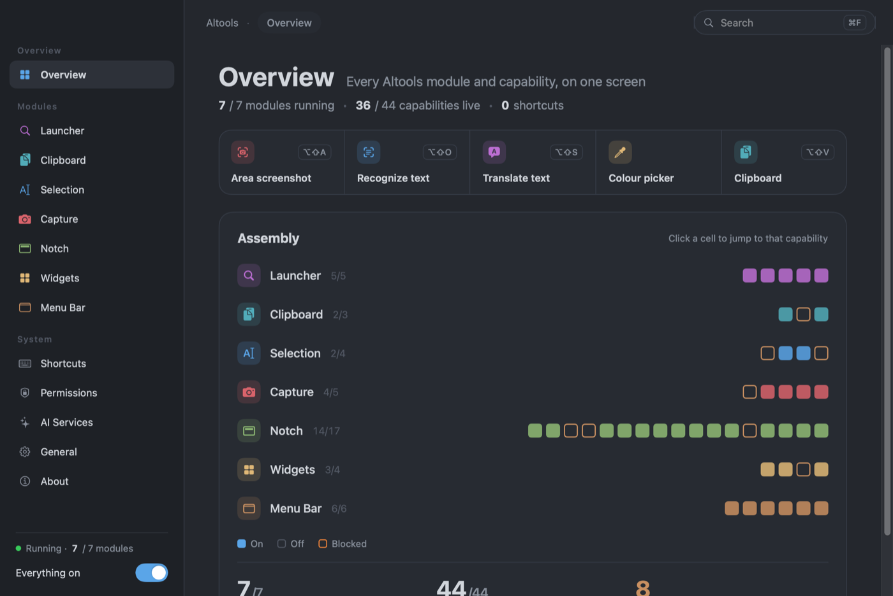

Altools
A notch island, launcher, clipboard, AI and menu-bar tools in one native Mac app.
Download for macOS GitHubOpen this page on a Mac to try the live desktop demo.




A free, open-source, native macOS app. Everything runs locally; AI goes through the Claude Code or Codex CLI you already use.
A notch island, launcher, clipboard, AI and menu-bar tools in one native Mac app.
Download for macOS GitHubOpen this page on a Mac to try the live desktop demo.



